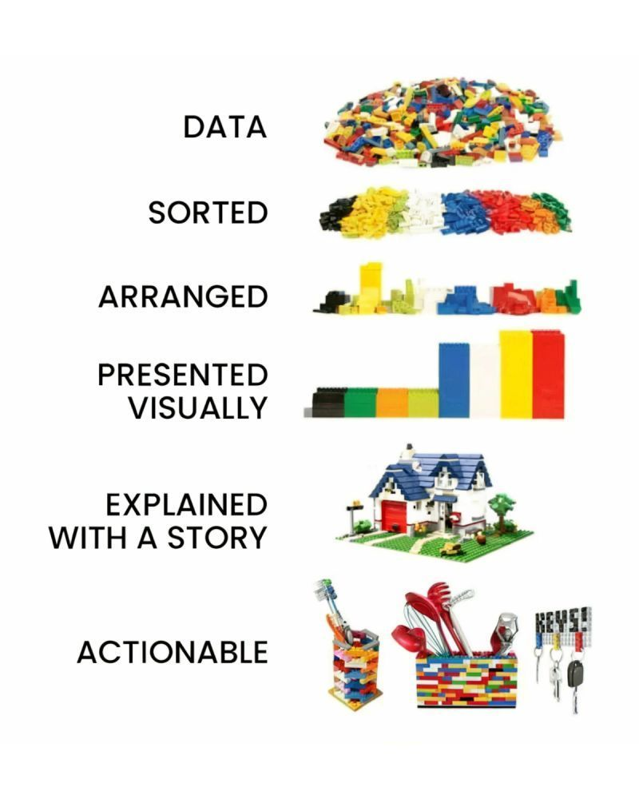

Data Analyst
Introduction
2025-11-03
Agenda
- Goal
- A little about me
- A little bit about you
- Program Overview
- Q&A
About Bootcamp
Instructor: Karen Hovhannisyan
Schedule: tbd
Duration: 6 Months
Modules: 6 Tech Stack: PostgreSQL · Python · Tableau · Docker · Git/GitHub
Tools: VScode · Pgadmin · Terminal · Excel
Goal
Prepare analytical thinkers , not just tool users
Equipping participants with a complete, functional, and standardized analytics environment from coding to version control, databases, and visualization tools.
What is Data Analytics?
… turning data into understanding and action.

Types of Analytics
| Descriptive | Diagnostic | Predictive | Prescriptive | |
|---|---|---|---|---|
| Purpose | Learn what happened. | Learn why something happened. | Learn what is likely to happen. | Learn what to do. |
| Output | Static reports with KPIs. | Reports with drill-down, slicing, and dicing capabilities. | Forecasts. | Actionable recommendations. |
Learning Journey
Module 1 | Statistical Thinking
Outcome: Build a foundational analytical mindset and statistical reasoning before moving to SQL and Python.
- Duration: 4 weeks
- Foundations: descriptive → inferential, sampling, distributions
- Hypotheses, p-values, confidence intervals
- Mini storytelling project
Module 2 | SQL
Outcome: Develop the ability to query, transform, and aggregate data efficiently, creating analytical datasets that form the foundation for Python-based analysis and dashboards.
- Duration: 6 weeks
- Basic queries
- Joins, CTEs, window functions
- Stored procedures, UDFs, CUBE/ROLLUP, materialized views
- Export analytical tables → CSV (for Tableau)
- Mini storytelling project
Module 3 | Python
Outcome: Strengthen analytical programming skills by automating data preparation, performing statistical tests, and applying predictive techniques to extract insights from SQL data.
- Duration: 7 weeks
- Python fundamentals, pandas, visualization
- A/B testing, regression, clustering (high-level)
- SQLAlchemy: read/write with PostgreSQL; ETL
- Mini project
Module 4 | Tableau
Outcome: Learn to visualize, interpret, and communicate insights effectively through interactive and dynamic dashboards that transform analytical results into compelling business narratives.
- Duration: 5 weeks
- Visual analytics, LODs, interactivity
- Design principles & performance
- Build public dashboards (Tableau Public)
Module 5 | Capstone
Integrate all acquired skills to design and deliver a complete end-to-end analytics project. From raw data to visual storytelling,demonstrating readiness for real-world analytics roles.
- Duration: 3 weeks
- Full pipeline: Problem Definition → SQL → Python → Tableau
- GitHub repo + Tableau Public link
- Portfolio
- Final presentation
Connected the dots
Module 1 — Statistical Thinking: Build a foundational analytical mindset and statistical reasoning before moving to SQL and Python.
Module 2 — SQL: Develop the ability to query, transform, and aggregate data efficiently, creating analytical datasets that form the foundation for Python-based analysis and dashboards.
Module 3 — Python: Strengthen analytical programming skills by automating data preparation, performing statistical tests, and applying predictive techniques to extract insights from SQL data.
Module 4 — Tableau: Learn to visualize, interpret, and communicate insights effectively through interactive and dynamic dashboards that transform analytical results into compelling business narratives.
Module 5 — Capstone: Integrate all acquired skills to design and deliver a complete end-to-end analytics project—from raw data to visual storytelling—demonstrating readiness for real-world analytics roles.